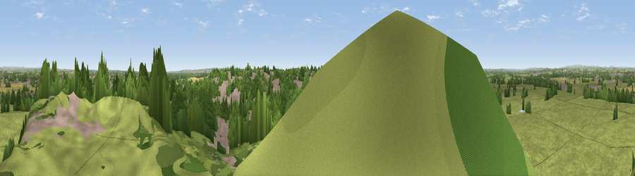

Viewpoint near Tutbury
#25122 in England · top 32% of its area beats it · near TutburyThe view, rendered

A 360° render of this exact spot computed from the terrain model, tree cover and land cover — summer colours, afternoon light, calibrated against photographs of famous viewpoints. Real trees, hedges and buildings will differ in detail.
The panorama
Grey silhouette: terrain skyline in each direction (720 bearings, Earth curvature and refraction included). Dashed green: skyline with trees (+15 m) and buildings (+8 m) as obstacles. Blue strip: how far the ground is visible on each bearing.
Where the view opens
Wedge length = distance to the farthest visible ground on that bearing (vegetation-aware). Rings at 10, 25 and 50 km.
What fills the view
66% grassland · 19% woodland · 11% built-up · 4% cropland
Angular shares of the visible panorama (visual magnitude), not map area. Landscape diversity 0.42 (0–1 Shannon).
Key numbers
More beautiful places nearby
The staircase of upgrades: each row has a higher view potential than everything closer. Driving times are estimates from straight-line distance, calibrated against real road routing — check an actual route before setting out.
| Place | Direction | Drive | Score |
|---|---|---|---|
| Viewpoint near Hanbury | WSW · 2 km | ~6 min | 54.1 |
| Viewpoint near Hanbury | WSW · 4 km | ~9 min | 54.7 |
| Viewpoint near Newton Solney | SE · 7 km | ~15 min | 55.0 |
| Viewpoint near Shirley | N · 14 km | ~25 min | 55.6 |
| Viewpoint near Hartshorne | ESE · 15 km | ~27 min | 59.5 |
| Viewpoint near Kniveton | N · 20 km | ~33 min | 60.5 |
| Viewpoint near Wootton | NNW · 20 km | ~33 min | 66.1 |
| Viewpoint near Wootton | NNW · 20 km | ~34 min | 74.4 |
52.85921, -1.69140 · source: screening · position refined by local search. Computed location — check access rights before visiting.